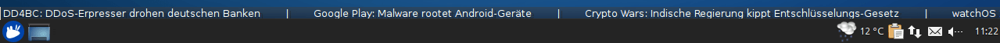
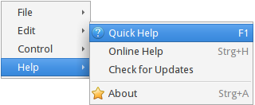
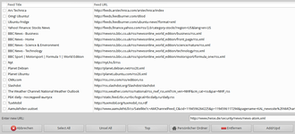
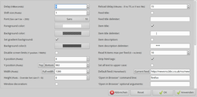

TICKR
Dieser Artikel wurde für die folgenden Ubuntu-Versionen getestet:
Ubuntu 16.04 Xenial Xerus
Ubuntu 14.04 Trusty Tahr
Zum Verständnis dieses Artikels sind folgende Seiten hilfreich:
TICKR  ist ein Desklet, mit dem Newsfeeds als Laufschrift bzw. als Kriechtitel auf dem Desktop angezeigt werden können. So kann man sich einen eigenen, individuellen Nachrichtenticker zusammenstellen. Obwohl die Konfiguration etwas sperrig ist, belohnt das Endergebnis für die Mühen.
ist ein Desklet, mit dem Newsfeeds als Laufschrift bzw. als Kriechtitel auf dem Desktop angezeigt werden können. So kann man sich einen eigenen, individuellen Nachrichtenticker zusammenstellen. Obwohl die Konfiguration etwas sperrig ist, belohnt das Endergebnis für die Mühen.
Konzipiert wurde es für auf der Grafikbibliothek GTK basierende Desktop-Umgebungen (GNOME, Xfce, LXDE, MATE) bzw. -Oberflächen (Unity). Bei KDE bieten Plasmoide eine ähnliche Funktion.

Installation¶
 Das Programm ist in den offiziellen Paketquellen enthalten. Folgendes Paket muss installiert werden [1]:
Das Programm ist in den offiziellen Paketquellen enthalten. Folgendes Paket muss installiert werden [1]:
tickr (universe)
 mit apturl
mit apturl
Paketliste zum Kopieren:
sudo apt-get install tickr
sudo aptitude install tickr
Verwendung¶
Das Programm kann bei Ubuntu-Varianten mit einem Anwendungsmenü über "Internet -> Tickr - Feed Reader" gestartet werden [2].
Beim ersten Programmstart führt ein englischsprachiger Assistent durch die Erstkonfiguration. Die gestellten Fragen bzw. die vorgeschlagenen Standardwerte können einfach mit der Schaltfläche "Weiter" übernommen werden. Einzige Ausnahme: wenn man am Ende gefragt wird, ob man eine OPML-Datei öffnen/importieren möchte, lehnt man ab und stimmt im nächsten Schritt der Verwendung eines Beispiel-Feeds zu (BBC News). Nun erscheint am oberen Bildschirmrand eine Laufschrift. Um eine Einzelmeldung zu lesen, reicht ein Linksklick  . Dann wird die jeweilige Nachricht im Webbrowser (Standard: Firefox) geöffnet.
. Dann wird die jeweilige Nachricht im Webbrowser (Standard: Firefox) geöffnet.

Möchte man eine andere Nachrichtenquelle auswählen oder die Programmeinstellungen aufrufen, ist das Kontextmenü  zu verwenden. Dazu den Mauszeiger auf der Laufschrift positionieren. Das Menü ist in vier Punkte untergliedert:
zu verwenden. Dazu den Mauszeiger auf der Laufschrift positionieren. Das Menü ist in vier Punkte untergliedert:
"File" - Feedliste anzeigen, Import/Export von Feeds und Programm beenden
"Edit" - Konfiguration und Verbindungseinstellungen
"Control" - Nachrichtenkontrolle (z.B. zwischen Feeds umschalten)
"Help" - Programmhilfe und Version
|  |
| Feedliste |
Über "File -> Open Feed" gelangt man zur Verwaltung der Feedliste. Enthalten ist bereits eine Reihe von internationalen Feeds. Möchte man einen neuen Feed hinzufügen, kopiert man die Internet-Adresse (URL) in das am unteren Fensterrand gelegene, dafür vorgesehene Feld und betätigt die Schaltfläche "Add/Upd". Welche Feeds später angezeigt werden, bestimmt das Kästchen am Zeilenanfang. Mit "OK (Single)" oder "OK (Selec)" (Einzelfeed oder Auswahl) wird die Feedliste geschlossen.
Problematisch kann an dieser Stelle die vorgegebene Fenstergröße sein, die nicht angepasst werden kann. Bei gedrückter linker Maustaste auf der Titelzeile (oberer Fensterrand) lässt sich das Fenster auf dem Desktop bewegen.
Tickr kann alternativ vollständig über die Kommandozeile gesteuert werden. Die möglichen Programmparameter sind der Dokumentation zu entnehmen (siehe Links am Ende des Artikels).
Einstellungen¶

Die Konfiguration von Tickr ist in einem einzigen Fenster untergebracht und sicher kein Beispiel für eine einfache und intuitive Benutzerführung. Eine weitere Hürde können die englischen Bezeichnungen sein. Trotzdem findet man sich mit etwas Geduld einigermaßen zurecht.
So dienen beispielsweise die Schaltflächen "top" und "bottom" zur Positionierung der Laufzeile auf dem Desktop. Oder man blendet das Programmsymbol auf der Taskleiste aus, in dem die entsprechende Option deaktiviert wird. Weitere häufig nachgefragte Möglichkeiten sind die Gestaltung der Textzeile (Vorder- und Hintergrundfarbe, Schriftgröße) und die Geschwindigkeit, mit der die Nachrichten angezeigt werden. In der Voreinstellung werden pro Feed nur die 5 neuesten Nachrichten gezeigt. Auch dieser Wert lässt sich anpassen.
Mit der Schaltfläche "Anwenden" werden die Änderungen übernommen. Man darf aber nicht vergessen, diese mit "OK" zu bestätigen, da sie sonst nicht gespeichert werden.
Alle Einstellungen werden im (versteckten) Ordner ~/.tickr/ im Homeverzeichnis gespeichert.
Problembehebung¶
Darstellung¶
Erst bei einem aktiven Composite-Manager passt sich die Laufschrift dem Hintergrundbild an.
Links¶
Dokumentation
- FAQ, Optionen und bekannte Bugs
An Open-Source RSS News Ticker for Linux Desktops
- Blogbeitrag, 06/2015Feedreader
 Programmübersicht
Programmübersicht
- Erstellt mit Inyoka
-
 2004 – 2017 ubuntuusers.de • Einige Rechte vorbehalten
2004 – 2017 ubuntuusers.de • Einige Rechte vorbehalten
Lizenz • Kontakt • Datenschutz • Impressum • Serverstatus -
Serverhousing gespendet von